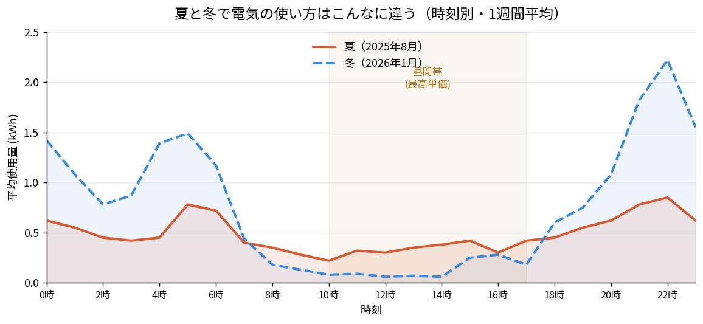
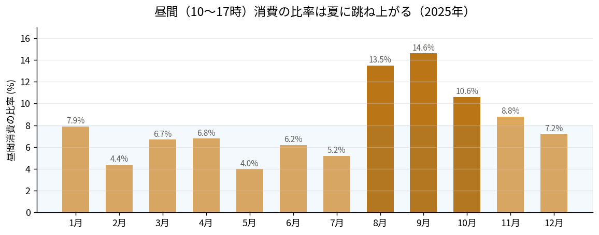

「電気代、もっと安くできるんじゃないか？」
「今のプランより新しいプランに変えたほうがいいのかな？」
戸建てに住んでいると、誰もが一度は悩むテーマだと思います。とくに新電力やオール電化向けプランの広告を見ると、つい気になってしまいますよね。
この記事では、16年前にオール電化＋太陽光を導入した4人家族の戸建ての、2025年〜2026年の実際の使用量・料金データを公開しながら、「プランを切り替えるべきか？」という問いに、リアルな視点で答えていきます。
先に結論を3つ
- 旧プラン（電化上手）は、変更しないほうがお得。むしろ死守すべき"資産"
- 夏場はエアコンをつけっぱなしでも、意外とこの程度で収まる
- 太陽光は昔（高単価売電の時代）は神。でも今から契約すると…？
それぞれ、実データを見ながら掘り下げていきます。
目次
我が家のスペック
まず前提となる条件を整理します。
| 住居 | 戸建て（4人家族＋猫） |
| 契約プラン | 東京電力「電化上手」（夜間が安い時間帯別プラン） |
| 給湯 | エコキュート（深夜にお湯を沸かす） |
| 暖房（冬） | 灯油ファンヒーター |
| 冷房（夏） | エアコン（リビング常時＋各部屋＋日中フルリモート） |
| 太陽光発電 | 16年前に住宅建設時に設置（売電のみ・設置費約35万円） |
| 主な夜間家電 | エコキュート・衣類乾燥機・食洗機 |
ポイントは、昼間の高い電気をできるだけ避け、安い夜間電力に消費を寄せているという点です。
「電化上手」の料金構造をおさらい
東京電力の「電化上手」は、時間帯によって電力量料金が大きく変わるプランです。
| 時間帯 | 時間 | 単価（1kWhあたり） |
|---|---|---|
| 夜間 | 23時〜翌7時 | 28.85円 |
| 朝晩 | 7〜10時・17〜23時 | 35.87円 |
| 昼間（その他季） | 10〜17時 | 40.44円 |
| 昼間（夏季） | 10〜17時 | 43.93円 |
※基本料金は10kVAで月2,457.50円
※夏季＝7月1日〜9月30日、その他季＝10月1日〜翌6月30日
注目すべきは、夜間と昼間で1.5倍以上の単価差があること。とくに夏季の昼間は43.93円と最も高く、夜間（28.85円）の約1.5倍です。つまり、いかに消費を夜間に寄せられるかが節約のカギになります。
実績データ①：1年間の料金と使用量（2025年）
まずは2025年・1年分の月別実績です。
| 月 | 総使用量 | 料金 |
|---|---|---|
| 1月 | 916 kWh | 28,308円 |
| 2月 | 932 kWh | 25,983円 |
| 3月 | 883 kWh | 25,245円 |
| 4月 | 768 kWh | 23,791円 |
| 5月 | 523 kWh | 18,183円 |
| 6月 | 451 kWh | 15,975円 |
| 7月 | 520 kWh | 17,993円 |
| 8月 | 602 kWh | 19,697円 |
| 9月 | 671 kWh | 21,475円 |
| 10月 | 442 kWh | 14,696円 |
| 11月 | 614 kWh | 20,402円 |
| 12月 | 712 kWh | 23,102円 |
| 年間合計 | 約7,034 kWh | 約253,850円 |
冬場（1〜3月・12月）はエコキュートの加熱効率が落ちることもあり、料金が25,000円前後と高めです。一方、6月・10月は1.5万円前後と落ち着いています。
実績データ②：使い方の主役は「夜間」
「電化上手」のキモは時間帯別の使い方です。冬季の実測（1週間分）では、夜間が約60%・朝晩が約35%・昼間がわずか5%程度。エコキュートの深夜稼働や、衣類乾燥機・食洗機を夜に回す習慣、そして冬は灯油ファンヒーターで暖房をまかなうため、高単価の昼間電力をほとんど使いません。「電化上手」と非常に相性が良い使い方になっています。
実績データ③：夏場、エアコンつけっぱなしでも「意外とこの程度」
さて、ここが一番気になるところ。夏にエアコンを使いまくったら電気代はどうなるのか？
我が家の夏のエアコン事情は、かなりヘビーです。
- リビング：常時運転（猫がいるため日中も切れない）
- 各部屋：夜間に家族それぞれが使用
- 日中：フルリモート勤務で常にエアコン使用
これだけ使えば爆発的に上がりそうですが……2025年8月の実績は602kWh・19,697円。冬場（1月の28,308円）より1万円近く安いのです。
理由は2つあります。1つは冬はエコキュートの加熱負荷が重く、給湯だけで電気を大量に食うこと。もう1つはエアコンは灯油ファンヒーターほど絶対的な消費が大きくないこと。「つけっぱなし＝破滅的に高い」というイメージとは裏腹に、夏はむしろ安い季節なのです。
時刻別に見ると、夏と冬はまるで別物
8月の1週間を時刻別に追うと、冬とは全く違う形が見えてきます。

冬（青の点線）は深夜0〜5時と21〜23時に鋭い山があり、昼間はほぼゼロ。一方、夏（オレンジ）は深夜の山が消えて、終日なだらかです。昼間（10〜17時）にも0.3kWh前後の消費が途切れず続いているのが、リビング常時運転＋フルリモートのエアコンの影響です。
それでも昼間比率は管理可能な範囲
月別に「昼間消費の比率」を見ると、夏に跳ね上がるのがはっきり分かります。

冬場は4〜8%程度なのに、8月13.5%・9月14.6%と約3倍に。夏季の昼間単価は43.93円と最も高いため、ここは確かに割高な消費です。
ただし——それでも夏の夜間比率は約51%。これだけ昼間にエアコンを使っても、消費の半分は依然として安い夜間に乗っているのです。だから夏場でも「電化上手」のメリットは十分に効いています。
夏場、さらに抑えるなら
- 設定温度を1〜2度見直す：消費電力は意外と大きく変わります
- リビング集中で過ごす日を増やす：各部屋バラバラより1部屋に集約するほうが効率的
- 就寝時はタイマーや微眠運転を活用：深夜の各部屋使用を抑えられます
とはいえ、実績を見れば夏は無理に我慢しなくても十分許容範囲。猫と家族の快適さを優先してOK、というのが正直な感想です。
本題：プランを切り替えたらお得になる？→ 答えは「変えないほうがお得」
ここまでの2年分のデータを踏まえた結論は明快です。我が家は「電化上手」を変えないほうがお得。
切り替えが「損」になる理由
- 夜間28.85円は新電力を含めても破格に安い
年間を通して消費の中心は夜間・朝晩。この安さを失えば、深夜のエコキュート分が一気に割高になります。 - 一度手放すと二度と戻れない
「電化上手」は新規受付終了済み。解約＝資産の永久喪失です。新電力に乗り換えて「やっぱり戻したい」と思っても、もう戻れません。 - 新電力には変動・倒産リスクがある
燃料費調整額や市場連動で、安く見えても結果的に高くつくことがあります。
夏に昼間比率が上がるとはいえ、年間で見れば夜間・朝晩が圧倒的多数。トータルでは現プラン維持が最適という結論は揺るぎません。
逆に、切り替えを検討する価値がある人
- 昼間の在宅が多く、年間を通して昼間消費が恒常的に高い（30%以上など）
- オール電化ではなく、夜間にまとめて使う家電が少ない
- 時間帯別プランではなく、従量電灯の標準プランを契約している
このタイプの方は、各社の最新料金と比較する意味があります。
太陽光：昔は「神」、今から始めると…？
我が家の太陽光は、16年前（2010年ごろ）に住宅建設時へ約35万円で設置しました。当時の売電単価はなんと1kWhあたり48円。今振り返ると、これ以上ないほど条件に恵まれたタイミングでした。
昔の太陽光が「神」だった理由
- 売電48円という、今では考えられない高単価
- 国・自治体の補助金が手厚かった時代で、実質負担をかなり圧縮できた
- 住宅建設と同時施工だったため、足場代・工事費を建築費と共有でき、設置費が激安（約35万円）に収まった
- 大手の量販ハウスメーカーで建てたため、太陽光もセット価格で割安に導入できた
- 月の売電収入から逆算すると、3〜4年で初期投資を回収
- その後10年以上は、ほぼ純粋な利益が積み上がった
「高単価売電」「手厚い補助金」「建築時設置による工事費削減」「ハウスメーカーのスケールメリット」——これらが全部重なった、タイミングと条件が完璧にハマった大成功の投資でした。
でも、今から契約すると…？
ここが正直なところです。今から新規に太陽光を載せるのは、当時ほどのうまみはありません。
- 売電単価は大幅に下落（FIT制度の買取価格は年々低下）
- かつての手厚い補助金も、当時ほどの規模ではなくなっている
- 我が家もFIT期間（10年）はとっくに終了し、現在の売電収入は2か月で約5,000円程度
- 後付け設置だと足場代・工事費がフルにかかり、初期投資が膨らむ
- そもそも後付けは屋根の強度しだいで設置できないことがある。既存住宅の屋根が想定外の重量に耐えられず、補強工事が必要になったり、最悪取り付け自体を断られるケースも
とくに最後の点は見落とされがちです。新築時なら屋根の設計段階から太陽光の重量を織り込めますが、後付けは屋根構造という制約に縛られる。「載せたくても載せられない家」が現実にあるのです。
「太陽光は儲かる」というのはあの時代だからこその話。これから載せる人は、売電で稼ぐより自家消費で買電を減らす設計で、屋根の状態・設置費・削減効果をシビアに試算する必要があります。
ちなみに蓄電池は？
「太陽光があるなら蓄電池も」と考えがちですが、我が家は見送りました。現在の相場では設置費100〜150万円、電気代の削減効果から逆算すると回収に15〜20年以上かかるケースがほとんど。費用対効果が合わないと判断しています。
チェックすべき盲点：「契約変更」の中身
最後に、見落としがちな注意点を。自分の契約がいつの間にか変わっていないかは確認しておきましょう。
電力会社から通知が来て、知らないうちに料金単価が改定されていることがあります。実際、2025年と2026年の同月を比べると、使用量がほぼ同じでも料金がじわっと上がっている月があります。単価改定の影響は、気づかないうちに効いてくるものです。
- 電力会社のマイページで契約変更履歴を確認する
- カスタマーセンターに「契約変更の詳細と変更前の単価」を問い合わせる
- 検針票の「需給開始日・契約変更日」をチェックする
まとめ：我が家の結論
2年分の実績を踏まえた結論です。
- ✅ 旧プラン「電化上手」は変更しないほうがお得。新規受付終了済みの"資産"、絶対に手放さない
- ✅ 夏はエアコンつけっぱなしでも意外とこの程度（8月19,697円）。むしろ冬より安い。我慢しすぎなくてOK
- ✅ 太陽光は2010年ごろの48円売電＋手厚い補助金＋建築時設置の時代だったから神。量販ハウスメーカーでのセット導入も効いて設置費35万円は大成功。でも今から始めるならうまみは薄く、後付けは屋根強度の壁もあり、自家消費前提でシビアな試算が必要
- ✅ 蓄電池は現相場では回収15〜20年。費用対効果が合わず見送り
- ✅ 単価の上昇傾向には注意。契約変更の中身は一度確認を
「新しいプランのほうがお得そう」という広告に惹かれる気持ちはわかります。でも、自分の使用パターンと現契約の強みを正しく理解すれば、"変えないこと"が一番賢い選択ということも多いのです。
まずは自宅の検針票やマイページを開いて、時間帯別の使用量を1年分確認してみてください。夏だけ見て「損してる」と早合点せず、年間トータルで判断する——それが、あなたにとって本当にお得な答えへの近道です。